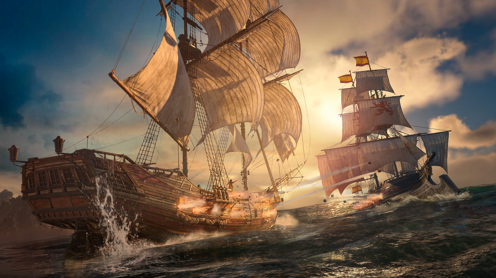

Trece años después del original, Ubisoft confirmó que Assassin's Creed: Black Flag Resynced llega el 9 de julio de 2026 a PS5, Xbox Series X/S y PC. No es un remaster: es un remake construido desde cero en la última versión del motor Anvil, con mecánicas mejoradas, nuevas historias y los personajes originales.
Qué tiene de nuevo
La historia central de Edward Kenway sigue intacta, narrada por Matt Ryan (el actor de voz original). Pero lo que Ubisoft rehizo no es menor. El sistema de parkour ahora permite hasta tres saltos encadenados con ejects laterales y hacia atrás, lo que hace que el movimiento sea mucho más fluido. El combate también cambió: más rápido, con posibilidad de hasta cuatro ejecuciones encadenadas y un sistema de parada perfecta más satisfactorio. Y el cambio más bienvenido para quien haya jugado el original: si fallas una misión de seguimiento o escucha furtiva, ya no te desincronizás automáticamente. En cambio, el objetivo reacciona y vos tenés que improvisar para salvar la situación.
La Jackdaw también tiene mejoras: nuevo arsenal naval, clima dinámico que afecta cómo maneja el barco, y efectos de disparo alternativos para cada arma. Y sí, podés sumar un gato o un mono a tu tripulación.
Nuevas historias y personajes
Ubisoft encargó contenido nuevo al escritor original del juego, Darby McDevitt. Entre las adiciones hay una nueva escena con Caroline (la esposa de Edward), arcos extendidos para Barbanegra y Stede Bonnet, y tres nuevos oficiales — Lucy Baldwin, The Padre y Deadman Smith — con habilidades únicas que desbloquean ventajas para la Jackdaw. El músico francés Woodkid contribuyó con nuevas canciones para sumar al repertorio de shanties.
La parte técnica
El juego corre en el último Anvil Engine con ray tracing, Dolby Atmos y mejoras específicas para PS5 Pro. Ubisoft Singapore, uno de los estudios principales del proyecto, destacó la implementación de PSSR para mantener imagen nítida sin artefactos de upscaling — algo visible especialmente en los entornos dinámicos del Caribe: tormentas, olas, palmeras moviéndose al viento.
Sin multijugador, y está bien
Ubisoft fue directa: no hay modo multijugador. El equipo se enfocó 100% en la experiencia de un jugador, que era el punto fuerte del original de todas formas. El multiplayer de AC: Black Flag era divertido, pero nadie lo extraña tanto como para que su ausencia sea un problema real.
Cómo comprarlo
Hay tres ediciones disponibles para pre-order. La Estándar incluye el juego base. La Deluxe agrega el Character Pack y el Naval Pack del Maestro Asesino. La Collector's Edition suma una figura de Edward, una insignia de metal, SteelBook y mapa de tela. Las tres traen el bonus de pre-compra: el Paquete Carmesí de Barbanegra (disfraz, espada y pistola con perks únicos).
Si el Black Flag original es uno de tus juegos favoritos de la saga, esta es exactamente la versión que querías. Si nunca lo jugaste, mejor todavía: empezás directo en la mejor versión.